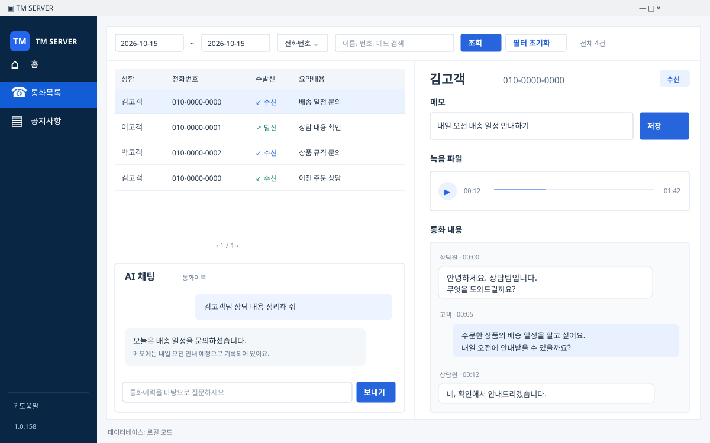
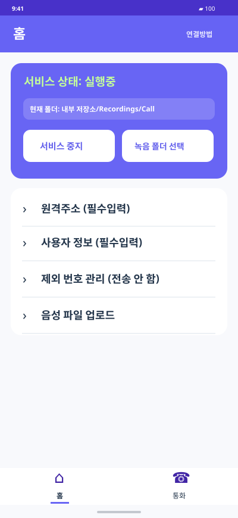

통화 내용은 PC에서 바로바로 메모
통화 중 필요한 내용을 상담 화면에 바로 남기세요. 메모가 통화이력과 함께 남아 다음 전화에도 이어서 확인할 수 있습니다.
상담원끼리 통화이력은 잘 공유되고 있나요?
콜센터 만들기로 통화 기록을 한곳에 모으세요. PC에서 바로 메모하고, 동료와 이력을 공유하고, 필요한 내용은 다시 듣거나 AI에게 물어보세요.


기록하고, 공유하고, 다시 듣고, 물어보세요. 다음 상담에 필요한 내용을 더 쉽게 확인할 수 있습니다.
통화 중 필요한 내용을 상담 화면에 바로 남기세요. 메모가 통화이력과 함께 남아 다음 전화에도 이어서 확인할 수 있습니다.
승인된 상담원 PC에서 같은 통화이력과 메모를 확인하세요. 담당자가 바뀌어도 지난 상담 내용을 바탕으로 응대할 수 있습니다.
휴대폰에서 녹음된 음성파일을 내 PC에 모아두세요. 해당 통화의 녹음을 열고 재생 위치를 옮겨 필요한 부분을 다시 들을 수 있습니다.
휴대폰에 통화 녹음 파일이 있어야 하며, 녹음 폴더 연결이 필요합니다.“지난번 고객이 요청한 내용이 뭐였지?” AI 채팅에서 물어보세요. 저장된 통화이력·메모·텍스트 기록을 바탕으로 필요한 내용을 확인할 수 있습니다.
알림을 열고, 이력을 확인하고, 다음 상담을 위한 메모를 남기세요.
휴대폰에 전화가 오면 PC 우측 하단에 알림이 표시됩니다. 알림을 눌러 상담 화면을 여세요.
PC 1.0.158의 화면 구성을 바탕으로 재구성했습니다. 이름·전화번호·상담 내용은 모두 설명용 예시입니다.
기록을 보관하는 호스트 PC 한 대에 휴대폰을 연결합니다. 다른 상담원 PC도 승인 후 같은 상담 이력을 확인할 수 있습니다.
사용자정보와 비밀번호를 설정하고 서버를 실행합니다.
같은 원격주소·비밀번호·사용자정보를 저장합니다.
호스트 PC에서 승인한 뒤, 통화 알림이 오는지 확인합니다.
이전에 어떤 이야기를 나눴는지, 무슨 안내를 약속했는지 통화이력과 메모로 확인하세요.
승인된 동료 PC에서 호스트의 기록을 확인하고, 이미 진행된 상담을 이어가세요.
저장된 녹음과 텍스트 기록을 확인하고, AI 채팅으로 필요한 정보를 찾아보세요.
Android 휴대폰의 수발신 통화를 Windows PC의 알림·통화이력·메모와 연결하는 상담 관리 앱입니다. 녹음 파일이 있으면 다시 듣기와 텍스트 기록, AI를 활용한 내용 확인도 할 수 있습니다. 실제 전화는 휴대폰으로 받습니다.
회사·매장 번호를 업무용 Android 휴대폰으로 착신전환해 받는 방식으로 사용할 수 있습니다. 착신전환은 이용 중인 통신사에서 별도로 설정하세요. 휴대폰 번호로 직접 걸고 받는 통화도 연결할 수 있습니다.
통화 녹음 지원 여부는 휴대폰과 기본 전화 앱에 따라 다릅니다. 녹음을 지원하는 환경에서 통화 녹음이 저장되는 폴더를 선택하세요. 녹음 다시 듣기와 텍스트 기록은 해당 녹음 파일이 있어야 사용할 수 있습니다.
추가 상담원 PC에 프로그램을 설치하고 클라이언트 탭에서 호스트 PC로 연결합니다. 최초 접속은 호스트 PC에서 승인해야 하며, 기록을 제공하는 호스트 PC가 실행 중이어야 합니다.
신규 등록 대상 기기에 60분 체험 시간이 제공됩니다. 이미 사용한 기기를 재설치해도 시간이 새로 지급되지는 않습니다. 이후에는 이용권을 충전해 사용하세요.
Windows PC와 Android 휴대폰으로 시작하세요. 신규 기기 60분 체험.